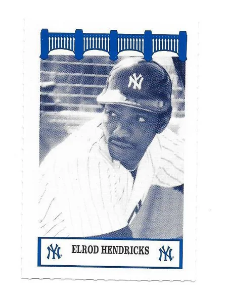
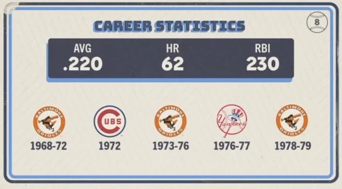

Elrod Hendricks "Ellie"
Career Highlights & Facts
(Facts are AI-generated and may require verification)
- This player was a key piece in a massive 10-player trade that brought a future Hall of Fame pitcher and a legendary catcher to the Yankees.
- He was known for his incredible longevity as a coach, spending over two decades in the bullpen for a rival organization after his playing days in the Bronx concluded.
- He was a member of a World Series championship team and was once famously involved in a home plate collision with a runner and an umpire during the Fall Classic.
Would you like to find out more about Elrod Hendricks?
Career Totals
| WAR | AB | H | HR | BA | R | RBI | SB | OBP | SLG | OPS | OPS+ |
|---|---|---|---|---|---|---|---|---|---|---|---|
| 7.5 | 1888 | 415 | 62 | .220 | 205 | 230 | 1 | .306 | .361 | .666 | 90 |
Statistics via Baseball-Reference.com
The Original Clue
